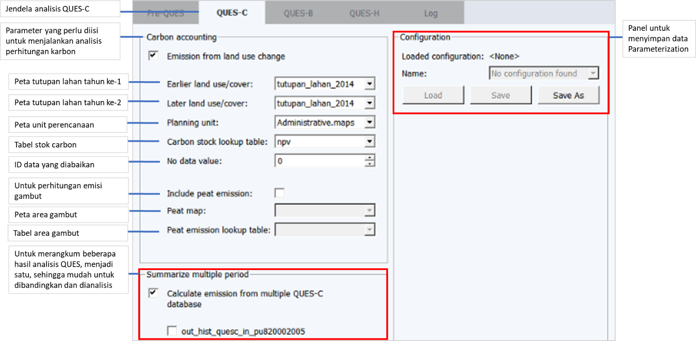
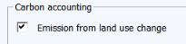
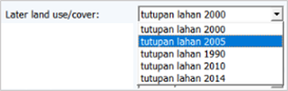
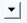
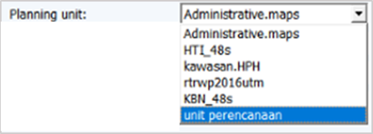
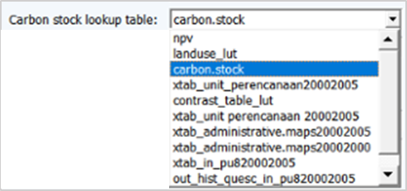
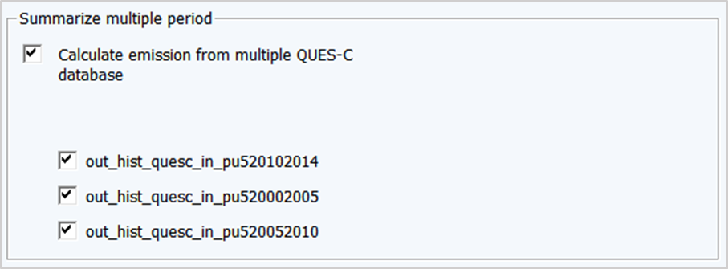

5.3 Proses Kerja
Proses Kerja
- Buka jendela analisis QUES-C
Pilih ikon QUES yang ada di bagian kiri atas jendela LUMENS → QUES-C

- Mengisi jendela QUES-C
Langkah selanjutnya adalah mengisi jendela analisis yang terbuka (Gambar 5.2)

Gambar 5.54 Jendela analisis QUES-C
- Menganalisis emisi karbon
Analisis ini digunakan untuk mengetahui emisi dan penyerapan karbon di suatu area pada periode tertentu. Centang kotak pada baris Emission from land use change.

Gambar 5.55 Kolom yang harus dicentang untuk mengaktifkan kolom analisis
- Mengisi kolom Earlier land use/cover
Kolom ini diisi dengan peta tutupan lahan pada tahun ke-1 (tahun yang lebih lama) akan dianalisis. Pilih  → tutupan_lahan_2000 (Gambar 5.4)
→ tutupan_lahan_2000 (Gambar 5.4)

Gambar 5.56 Penambahan peta tutupan lahan untuk mengisi kolom Earlier land use/cover
- Mengisi kolom Later land use/cover
Kolom ini diisi dengan peta tutupan lahan pada tahun ke-2 (tahun yang lebih baru) akan dianalisis. Pilih  → tutupan_lahan_2005 (Gambar 5.5)
→ tutupan_lahan_2005 (Gambar 5.5)

Gambar 5.57 Penambahan peta tutupan lahan untuk mengisi kolom Later land use/cover
- Mengisi kolom Planning unit
Kolom unit perencanaan diisi dengan peta perencanaan yang berlaku dan diakui di wilayah administratif, atau dapat menggunakan unit perencanaan hasil dari analisis PreQUES. Pilih → unit_perencanaan (Gambar 5.6)

Gambar 5.58 Pemilihan data unit perencanaan yang digunakan untuk analisis
- Mengisi kolom Carbon stock lookup table
Kolom ini diisi dengan data tabel stok karbon. Pilih  → carbon_stock (Gambar 5.7)
→ carbon_stock (Gambar 5.7)

Gambar 5.59 Penggunaan tabel stok karbon untuk analisis QUES-C
- Mengisi kolom No data value
- Kolom ini berisi ID tabel dari data tabular acuan tutupan lahan yang berisi No Data. No Data perlu dituliskan atau disertakan dalam analisis ini untuk menganulir tutupan awan yang ada pada data tutupan lahan yang akan dianalisis. Dalam contoh ini, ID awan pada tabel acuan tutupan lahan adalah ‘0’.
- Menganalisis emisi karbon di area gambut
Jika pada area yang akan dianalisis terdapat kawasan gambut, maka kolom Include peat emission perlu dicentang (Gambar 5.8)

Gambar 5.60 Panel untuk melakukan analisis QUES-C Peat atau gambut
- Mengisi kolom Peat map
Isi kolom ini dengan peta kawasan gambut, dengan cara pilih tombol  → peat_48s
→ peat_48s
- Mengisi kolom Peat emission lookup table
Isi kolom dengan tabel acuan stok karbon gambut, dengan cara pilih tombol  → matriks_factor_emisi_peat
→ matriks_factor_emisi_peat
- Memulai analisis QUES-C
Jika seluruh kolom telah terisi dengan benar, pilih tombol Process untuk memulai analisis QUES-C. Tunggu hingga proses analisis selesai (Gambar 5.9).
Gambar 5.61 Jendela yang menunjukkan bahwa proses analisis telah selesai
- Merangkum hasil analisis dengan Summarize multiple period
Untuk mempermudah pengguna dalam melakukan analisis hasil-hasil QUES-C, Modul ini dilengkapi dengan pilihan Summarize multiple period untuk merangkum hasil analisis dari beberapa periode yang telah dilakukan.
Centang kotak Calculate emission from multiple QUES-C untuk mengaktifkan kolom analisis dan pilih keluaran QUES-C yang akan di summarize atau kompilasikan (Gambar 5.10), kemudian pilih Process, tunggu hingga proses analisis selesai.

Gambar 5.62 Centang kolom Calculate emission from multiple QUES-C dan pilih data yang akan di kompilasi
Created with the Personal Edition of HelpNDoc: Create HTML Help, DOC, PDF and print manuals from 1 single source